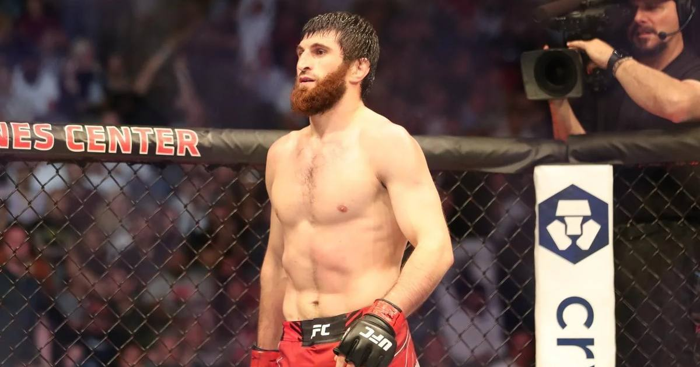

Ankalaev accepts Stirling's callout
Magomed Ankalaev answered Navajo Stirling's callout on Monday, saying he's ready any time, anywhere — and even floated fighting in Australia in February.

Disclosure: this post contains affiliate links. I earn a commission on qualifying purchases.
Magomed Ankalaev said yes. The former UFC light heavyweight champion answered Navajo Stirling's callout on X on Monday, two days after Stirling knocked out Jiri Prochazka in the UFC Qatar main event.
"I accept your challenge," Ankalaev wrote. "Let's do it at any time, anywhere. I'm ready."
He followed it up with a second post floating a location: Australia, in February. No fight has been booked or announced by the UFC — this is a public handshake between two fighters, not a date on the calendar yet.
How it got here
Stirling earned the right to pick a name on Saturday night in Doha. He knocked out Prochazka, a former champion, at 4:58 of round two in the main event at ABHA Arena, extending his unbeaten run to a dozen straight wins.
At the post-fight press conference, Stirling was asked who he wanted next and named two former champions — Ankalaev and Alex Pereira. His words were full of respect for the Russian: "He's a really, really good fighter, very dangerous, and well-rounded. I feel like he would be a very tough test for anyone, and that's an exciting fight for me as well."
Stirling also made clear what the fight would mean for his standing. "If I can beat those guys, I can really set off my name to be really well-respected in the MMA community and kick off my dynasty."
Why Ankalaev, not the belt
The obvious next step for a surging contender would be a title shot. Stirling didn't take it — because the belt belongs to his own teammate. Carlos Ulberg, Stirling's City Kickboxing training partner, holds the light heavyweight title and is sidelined recovering from ACL surgery, an injury from his title win over Prochazka at UFC 327 in April.
So instead of waiting on his teammate or forcing an awkward conversation, Stirling pointed at the division's other former champion. Ankalaev lost the belt to Pereira at UFC 320 in October 2025 and has fought once since, a late TKO win over Bogdan Guskov at UFC Abu Dhabi in July.
What the matchup looks like
Stirling's last two fights tell the story of a contender arriving fast. Before Doha, he stopped former champion Jan Blachowicz in the first round in August, so the Prochazka finish makes it two straight knockouts of former champions. He is 12-0 overall and 7-0 in the UFC, and he did the latest one in his first UFC headlining assignment.
Ankalaev is the test Stirling says he wants: a former champion, durable, well-rounded, and a stylistic problem for anyone at 205 pounds. A February date in Australia — Ankalaev's own suggestion — would put the fight on Stirling's side of the world, in front of a crowd that would treat the Kiwi like a home fighter.
For now it is only words on social media. But both men have said yes in public, and that is usually how these fights get made.
Watch
Source: Prochazka vs Stirling Full Fight Highlights BRUTAL KO | UFC Qatar 2026 (MMA & Cross Fitness India) — full-fight highlights of Stirling's second-round knockout of Prochazka at UFC Qatar, the win that set up the callout.
Gear up: UFC gear (walkout shirts, replica fight kits, event apparel): via Fanatics